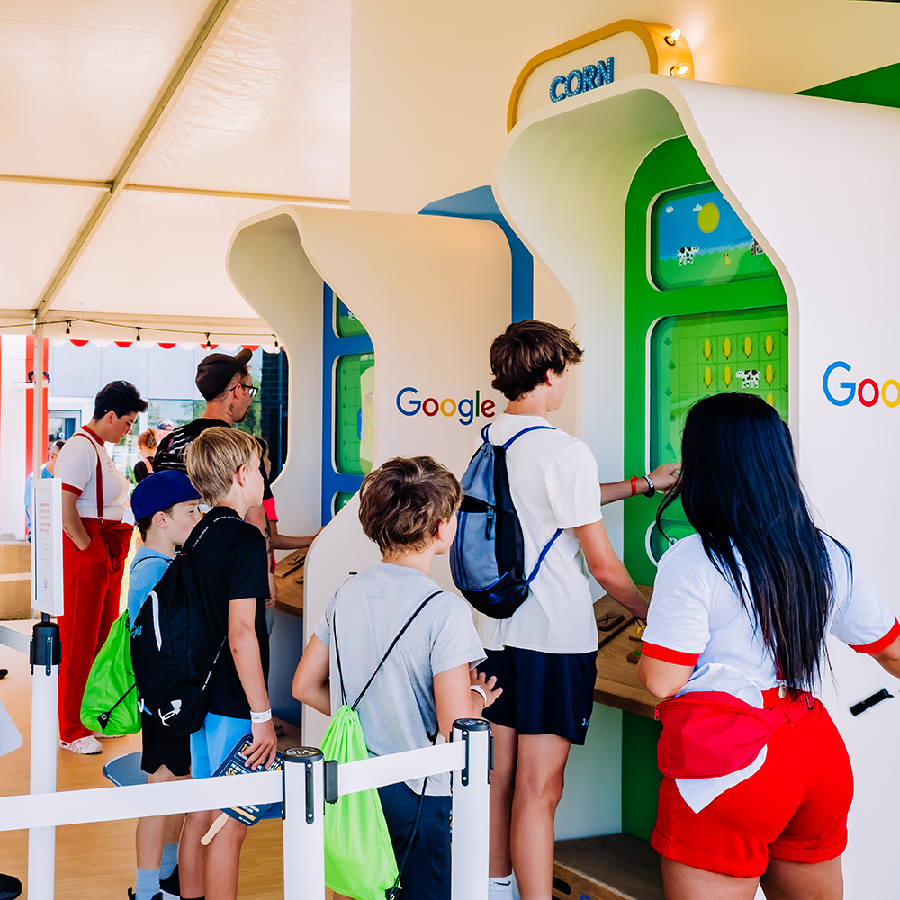
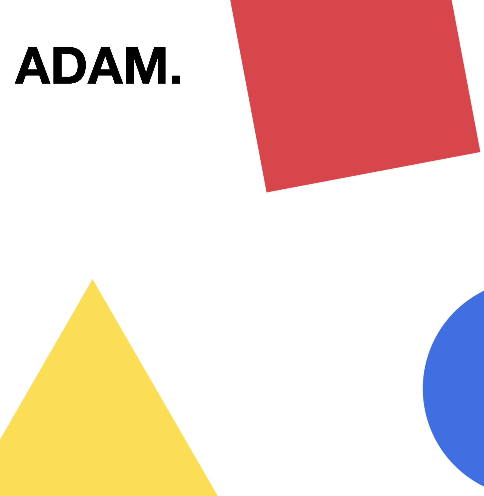
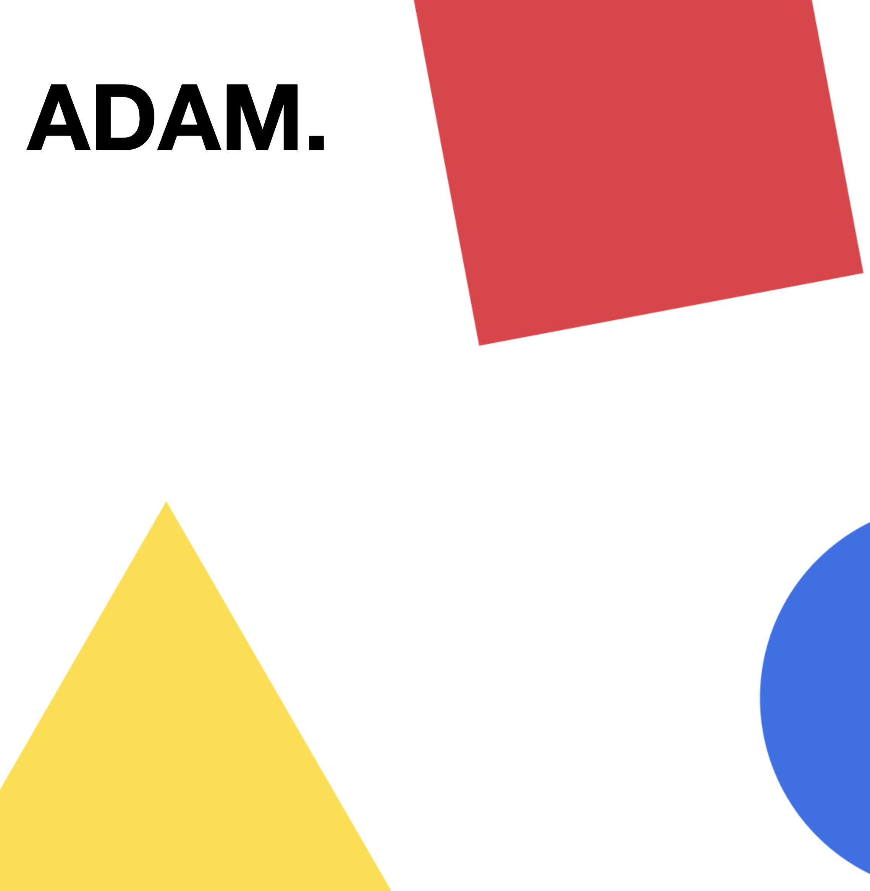

Google Coding Carnival
Arcade Game - Deeplocal, 2022
Deeplocal is a creative technology firm based in Pittsburgh. They were hired to create an arcade machine for Google's popup Coding Carnival at the Iowa State Fair in August 2022. As an intern that summer, I wrote the software for the game running on the arcade machine, using P5JS and Electron. To play, kids inputted a sequence of directions for a tractor, and then ran that sequence to move the tractor and collect corn.
You can learn more about the project on Deeplocal's website.
 
